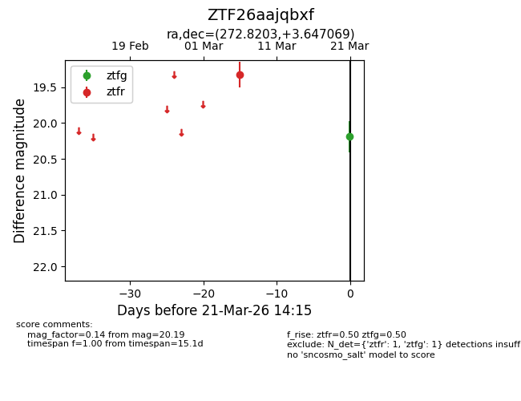
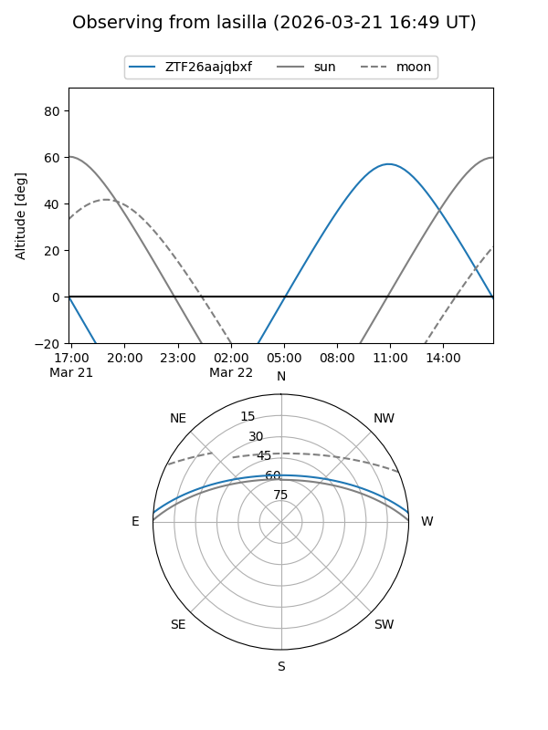
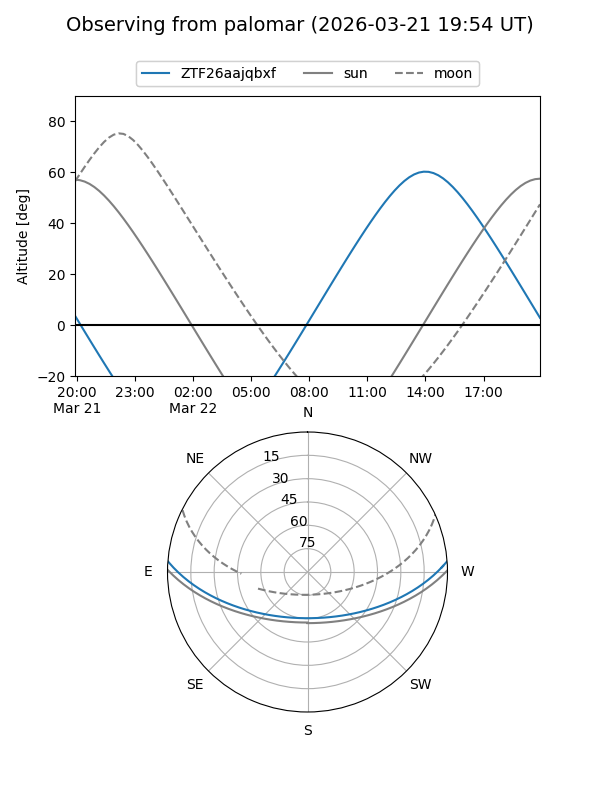
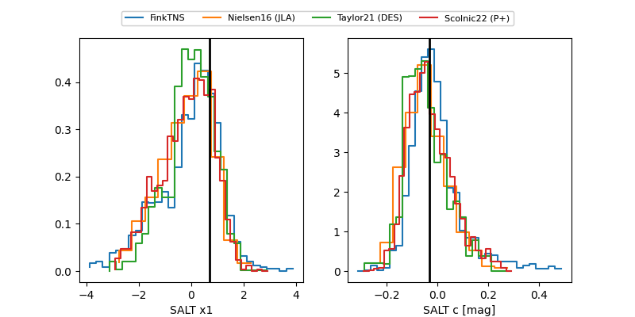

ZTF26aajqbxf
Target ZTF26aajqbxf at 2026-03-21 14:17
Aliases and brokers:
FINK: link
Lasair: link
ALeRCE: link
alt names
ZTF26aajqbxf (ztf,fink_ztf)
Coordinates:
equatorial (ra, dec) = 272.8203,+3.64707
equatorial (HMS+DMS) = 18:11:16.88,+03:38:49.45
galactic (l, b) = (31.6078,+10.59319)
Flags:
Photometry:
last ztfg=20.19, ztfr=19.32
1 ztfg, 1 ztfr detections
Lightcurve

Visibility


Additional plots
